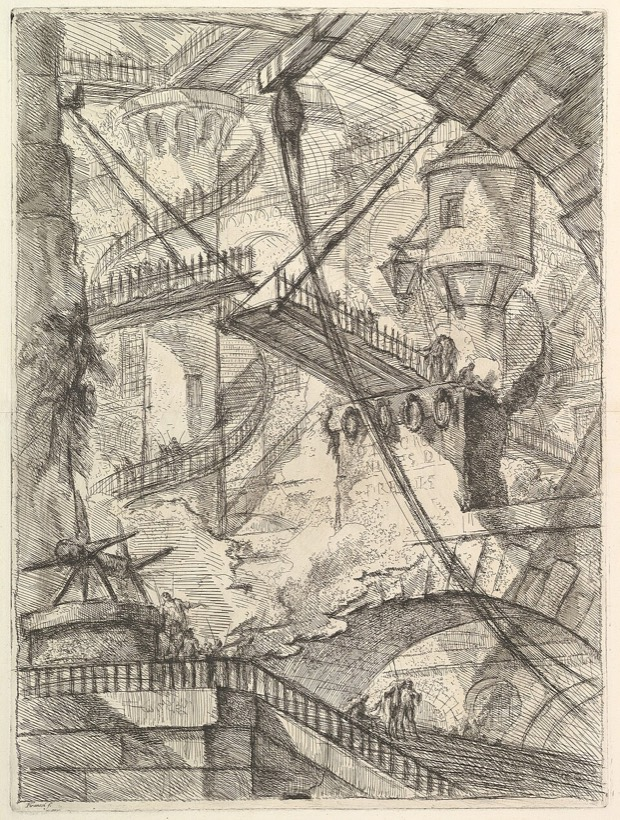

The Edited Volumes
Critics of Enlightenment Rationalism
Burke, Tocqueville, Kierkegaard, Nietzsche, Eliot,
Wittgenstein, Oakeshott, Hayek, and more.
Published by Palgrave.

Critics of Enlightenment Rationalism Revisited Pascal, Vico, Dostoevsky, Weber, Tolkien, Anscombe, Scruton, Gray, and more.Topics
- Project Tradition V. Rationalism
- Cosmos + Taxis Jane Jacobs' Critique of Rationalism in Urban Planning
- Paper Hayek and Oakeshott on Rationalism
- FEE Michael Oakeshott on Rationalism in Politics
- Paper Winch on Following a Rule
- Paper Ideal Types and the Historical Method
- Review · Kirk Center Review of The Tyranny of Metrics
- Paper C.S. Lewis on Rationalism: a Precursor to Oakeshott?